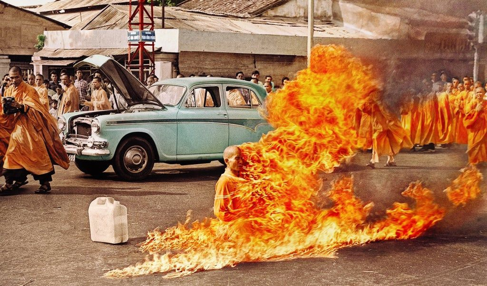

Cамосожжение буддистского монаха во Вьетнаме, 1963 год
В 1954 г., после без малого семидесяти пяти лет оккупации и двадцати лет войны, вьетнамцы наконец вышвырнули французов из своей страны. Это должно было стать однозначно хорошим событием. Но вот незадача: как раз тогда всем трепала нервы холодная война – глобальная религиозная война между капиталистическими, либеральными западными силами и коммунистическим восточным блоком. И узнав, что Хо Ши Мин (тот чувак, который вытурил французов) – коммунист, все, скажем так, психанули и решили, что он сейчас развяжет Третью мировую.
Испугавшись этой перспективы, кучка глав государств уселась за помпезный стол где–то в Швейцарии и договорилась обойтись без ядерного взаимоуничтожения и просто–напросто поделить Вьетнам пополам. Зачем разрубать пополам страну, которая не сделала никому ничего плохого, – не спрашивайте. В общем, все решили, что Северный Вьетнам будет коммунистическим, а Южный – капиталистическим, и дело с концом. Будет всем счастье.
(Что вряд ли.)
А дальше дело было так: западные силы назначили человека по имени Нго Динь Зьем главой Южного Вьетнама до проведения нормальных выборов. Поначалу он всем страшно нравился. Он был набожным католиком, получил французское образование, прожил несколько лет в Италии и говорил на нескольких языках. Познакомившись с ним, вице–президент США Линдон Джонсон назвал его «азиатский Уинстон Черчилль». Он был практически одним из нас!
А еще Зьем был харизматичным и целеустремленным. Он произвел впечатление не только на западных лидеров, но и на бывшего императора Вьетнама. Он уверенно заявлял, что сумеет наконец привести Юго–Восточную Азию к демократии. И все ему верили.
Но зря. За первый год после прихода к власти Зьем объявил незаконными все партии Южного Вьетнама, кроме собственной. А когда пришло время проводить референдум, он поставил следить за всеми избирательными участками своего брата. И, вы не поверите, победил на выборах! С невероятными 98,2 % голосов!
Оказалось, что этот Зьем – самый настоящий говнюк. И Хо Ши Мин, лидер Северного Вьетнама, был, конечно, тоже самым настоящим говнюком. А если меня в колледже чему и научили, так это главному правилу геополитической теории: когда два говнюка живут по соседству, жди гибели миллионов людей. Вот ровно по этому правилу Вьетнам и скатился к гражданской войне.
Я бы с радостью рассказал о Зьеме что–нибудь неожиданное, но нет: он превратился в банального тирана. Его администрацию заполонили родственники и коррумпированные дружки. Он с семьей купался в роскоши, пока в провинции бушевал голод, лишивший здоровья и жизни тысячи людей. Из–за его самодовольства и некомпетентности США начали влезать в Южный Вьетнам, стараясь предотвратить всплеск негодования, и все это закончилось печально известной войной во Вьетнаме.
Но несмотря на то, каким убожеством оказался Зьем, западные силы продолжали стоять за него горой. Ведь он казался одним из «своих»: поборником либеральной капиталистической религии, стойко отражающим натиск коммунистов. Понадобились годы кошмара и бесчисленных смертей, чтобы Запад понял, что Зьем заинтересован не столько в его религии, сколько в своей собственной.
Как и у многих других тиранов, одним из любимых развлечений у Зьема было преследовать и убивать людей, с которыми он не сходился во взглядах. В данном случае, будучи ярым католиком, Зьем ненавидел буддистов. Но в то время буддистами были около 80 % вьетнамцев, так что народ был, скажем прямо, не в восторге. Зьем запретил буддистские изображения и флаги. Он запретил буддистские праздники. Он отказался предоставлять государственные услуги буддистским общинам. Он захватывал и разрушал пагоды по всей стране, пуская по миру сотни буддистских монахов.
Буддистские монахи организовывали и проводили мирные протесты, но их, естественно, разгоняли. Тогда протесты стали масштабнее – и Зьем объявил протесты вне закона. Когда полиция велела буддистам разойтись, а те отказались, полиция открыла по протестующим огонь. На одном мирном митинге она даже закидала группы безоружных монахов гранатами.
Западные репортеры знали об этих притеснениях на религиозной почве, но их больше волновала война с Северным Вьетнамом, так что до остального им особо дела не было. Мало кто знал о масштабах проблемы, и почти никто не удосуживался писать о столкновениях.
И вот 10 июня 1963 г. репортеры получили загадочное сообщение, в котором говорилось, что на следующий день в Сайгоне на оживленном перекрестке всего в нескольких кварталах от президентского дворца произойдет «нечто важное». Корреспонденты не придали этому большого значения, и большинство решили никуда не ходить. На следующий день в указанное место явилась лишь горстка журналистов, среди которых было только два фотографа. И один из них забыл принести камеру.
А второй впоследствии получил Пулитцеровскую премию. В тот день на улице появилась процессия из нескольких сотен монахов и монахинь, во главе которой ехала маленькая бирюзовая машина, увешанная баннерами с требованием религиозной свободы. Монахи пели. Люди ненадолго останавливались и наблюдали за шествием, а потом спокойно возвращались к своим делам. День был в разгаре, место было оживленное, а к буддистским протестам все уже привыкли.
Процессия дошла до перекрестка у посольства Камбоджи и остановилась, полностью перекрыв движение. Группа монахов встала полукругом возле бирюзовой машины и застыла в молчаливом ожидании.
Из машины вышли трое монахов. Один вынес и положил в центр перекрестка подушечку. Второй монах постарше, Тхить Куанг Дык, подошел к подушечке, сел в позу лотоса, закрыл глаза и начал медитировать.
Третий монах открыл багажник, достал пятигаллонную канистру бензина, подошел с ней к Тхить Куанг Дыку и облил его горючим с головы до ног. Свидетели этой сцены начали зажимать рты руками. Некоторые почувствовали, как от запаха бензина защипало глаза, и стали прятать лицо в ладонях. Над оживленным перекрестком повисло напряженное молчание. Прохожие остановились. Полицейские замерли в недоумении. Воздух сгустился. Вот–вот должно было случиться что–то важное. Все это понимали.
Сидя с непроницаемым лицом в насквозь пропитанных бензином одеждах, Куанг Дык прочитал короткую молитву, медленно протянул руку, взял спичку и, не меняя позу и не открывая глаз, чиркнул ею об асфальт и поджег себя.
В одно мгновение его окружила стена огня. Пламя полностью охватило его тело. Его одеяние рассыпалось в прах. Кожа почернела. Воздух наполнился смрадом: смесью запаха горелой плоти, бензина и дыма. В толпе стали раздаваться крики и стенания. Многие упали на колени или вовсе растянулись на земле. Остальные стояли, не в силах пошевелиться от изумления и ужаса.
Но сам Куанг Дык оставался абсолютно неподвижен
Дэвид Халберстам, корреспондент The New York Times, позже так описывал эту сцену: «Я был так шокирован, что не мог плакать, так обескуражен, что не мог делать записи или задавать людям вопросы, так растерян, что не мог даже просто думать… Пока он горел, в нем не дрогнул ни один мускул, он не издал ни единого звука, в своем непоколебимом спокойствии он резко контрастировал с воющей толпой вокруг».
Новость о самосожжении Куанг Дыка быстро облетела всю планету и вызвала яростный отклик у миллионов людей. В тот же вечер Зьем выступил с радиообращением к народу – и, судя по его голосу, инцидент его немало взволновал. Он пообещал вернуться к переговорам с буддистскими лидерами страны и найти мирное решение конфликта.
Но было уже слишком поздно. Авторитет Зьема не восстановился. Невозможно было сказать, что именно поменялось и как, но сам воздух будто стал другим и улицы стали бойчее. Одна вспыхнувшая спичка, один щелчок затвора фотоаппарата – и невидимая хватка, в которой Зьем держал страну, ослабла, и это почувствовали все, включая самого Зьема. Вскоре тысячи людей хлынули на улицы, выражая открытый протест против его политики. Его военное командование стало проявлять неподчинение. Его советники начали оспаривать его решения. Тут уже даже США не могли придумать, на каком основании можно было бы и дальше его поддерживать. И тогда президент Кеннеди дал отмашку верховному главнокомандованию Вьетнама свергнуть Зьема.
Фотография гибели Куанг Дыка стала вирусной до того, как мир узнал, что такое «стать вирусным». Она служила своего рода тестом Роршаха: каждый видел в ней отражение собственных ценностей и проблем. Коммунисты в СССР и Китае публиковали это фото, чтобы настроить своих сторонников против капиталистического империализма Запада. По всей Европе оно продавалось в виде открыток, обличающих зверства, которые творятся на Востоке. Антивоенные демонстранты в США распечатывали снимок для протестов против участия своей страны в военных действиях. Консерваторы использовали его как доказательство необходимости интервенции США во Вьетнам. Даже Кеннеди был вынужден признать, что «никогда газетная фотография не вызывала столь сильного волнения по всему миру».
Фотография самосожжения Куанг Дыка пробудила в людях какое–то глубинное, общечеловеческое чувство. Дело здесь не в политике и не в религии. Этот снимок заключил в себе некий куда более значимый компонент человеческого бытия: способность выносить немыслимую боль. Я даже за обеденным столом не могу больше пары минут ровно просидеть. А этот чувак горел заживо и даже не пошевелился. Он не дрогнул. Не закричал. Не улыбнулся, не поморщился, не скривился и даже не открыл глаза, чтобы в последний раз взглянуть на мир, который решил покинуть.
В его поступке ощущалась какая–то особая чистота – не говоря уж о совершенно невероятной решимости. Он был ярчайшим примером победы духа над телом, воли над инстинктом.